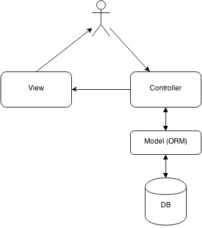
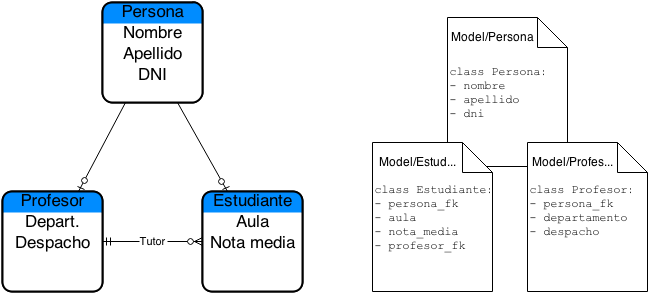
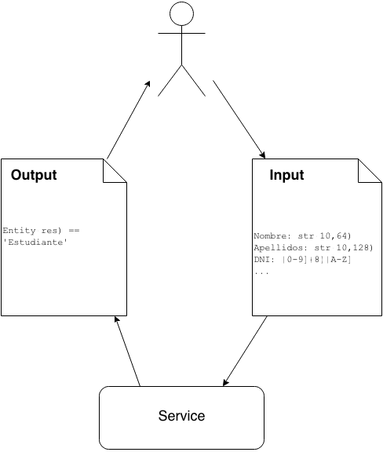
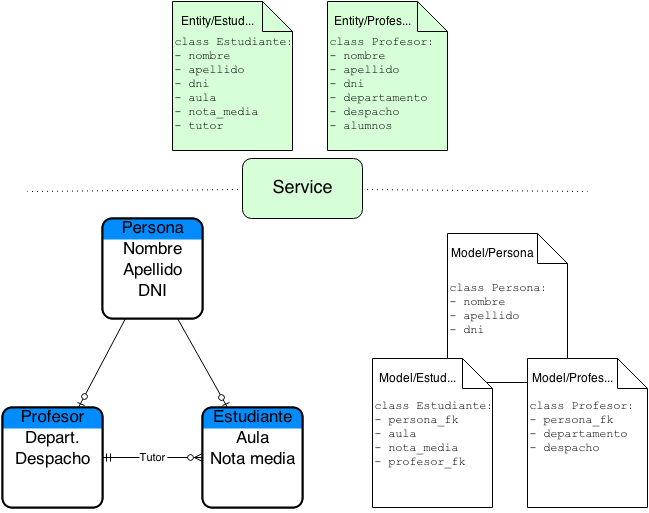

Herramientas de desarrollo ágil
Lluís Ballester
lballester@habitissimo.com
Introducción
Habitissimo fue creada con lo mínimo necesario
Evolución
☺☻☻☻☻
☺☺☻☻☻☻☻☻☻☻
☹☹☹☹ ☻☻☻☻☻☻☻☻☻☻ ☻☻☻☻☻☻☻☻☻☻ ☻☻☻☻☻☻☻☻☻☻ ☻☻☻☻☻☻☻☻☻☻ ☻☻☻☻☻☻☻☻☻☻ ☻☻☻☻☻☻☻☻☻☻ ☻☻☻☻☻☻☻☻☻☻
¿Cómo se desarrollaba?
Desarrollos = "Agujeros Negros"
|
|
|
= |
|
Nos vimos obligados a cambiar.
- Ágil: capacidad de reaccionar rápidamente ante situaciones de cambio.
- Scrum.
- Arquitectura de software.
- Entornos de desarrollo y despliegue de aplicaciones.
Metodologías tradicionales:
Metodologías basadas en el SDLC.
¿Por qué elegimos 'scrum' descartando lo tradicional?
Experiencia de proyectos pasados.
Contexto y situación dentro de Habitissimo.
Jordi Llull
jllull@habitissimo.com
Arquitectura ágil
MVC
ORM
Servicios al rescate
"Strong static typing has really significant benefits"
Contrato de entrada y contrato de salida
Entidades
Tests
Los datos
- Un 30% más de tiempo en nuevos desarrollos
- 16.800 líneas de código escritas
- 11.500 líneas de lógica
- 5.300 líneas de test (45%)
"Estábamos haciendo un 30% menos del trabajo necesario"
Hugo Chinchilla
hchinchilla@habitissimo.com
@ganon

Sistema de control de
versiones DISTRIBUIDO
- Cada desarrollador tiene una copia completa del repositorio
- Puedes trabajar offline
- Ridiculamente rápido
- Sabe resolver conflictos mejor que tu
Git es sencillo
a pesar de las apariencias
Puedes aprender lo básico en 15 minutos
¿Que hace diferente a Git?
- Diferentes workflows para diferentes necesidades
- Tener muchas ramas es "barato"
git stashgit blamegit bisect
git blame
2813b1b (Hugo Chinchilla Carbonell Mon May 19 09:32:10 2014) .reveal section img.noborder {
2813b1b (Hugo Chinchilla Carbonell Mon May 19 09:32:10 2014) border: 0;
2813b1b (Hugo Chinchilla Carbonell Mon May 19 09:32:10 2014) box-shadow: none;
2813b1b (Hugo Chinchilla Carbonell Mon May 19 09:32:10 2014) background: transparent;
2813b1b (Hugo Chinchilla Carbonell Mon May 19 09:32:10 2014) }
0000000 (Not Committed Yet Tue May 20 10:02:35 2014) .reveal section .diagram-title {
0000000 (Not Committed Yet Tue May 20 10:02:35 2014) font-size: 1.5em;
09dc493 (jordillull Mon May 19 20:09:57 2014) margin: -85px 0 0;
09dc493 (jordillull Mon May 19 20:09:57 2014) }
09dc493 (jordillull Mon May 19 20:09:57 2014)
ede56c0 (Hugo Chinchilla Carbonell Mon May 19 17:19:52 2014) .reveal section img.diagram {
ede56c0 (Hugo Chinchilla Carbonell Mon May 19 17:19:52 2014) border-radius: 20px;
ede56c0 (Hugo Chinchilla Carbonell Mon May 19 17:19:52 2014) background: #fff;
ede56c0 (Hugo Chinchilla Carbonell Mon May 19 17:19:52 2014) padding: 20px;
09dc493 (jordillull Mon May 19 20:09:57 2014) height: 600px;
ede56c0 (Hugo Chinchilla Carbonell Mon May 19 17:19:52 2014) }
2813b1b (Hugo Chinchilla Carbonell Mon May 19 09:32:10 2014) .reveal section ul {
2813b1b (Hugo Chinchilla Carbonell Mon May 19 09:32:10 2014) margin-top: 2em;
2813b1b (Hugo Chinchilla Carbonell Mon May 19 09:32:10 2014) margin-bottom: 2em;
2813b1b (Hugo Chinchilla Carbonell Mon May 19 09:32:10 2014) }
Usa git para
casi
todo
- Documentación
- Requerimientos
- Archivos de configuración
- Incluso imágenes y sonidos
- Código (por supuesto)
Porque git elimina los problemas de comunicación
- ¿Alguien ha cambiado el documento de requerimientos?
- ¿Esto siempre ha estado asi?
- ¿Quien ha roto esto?
Git nos permite que cada cambio quede registrado y firmado
Caso práctico
Cómo Habitissimo hace uso de Git
2 ramas principales
- master:
- siempre estable
- develop:
- se cree estable, pero no ha sido probado en producción
∞ ramas de desarrollo
1 rama de Sprint
¿Que es?
Vagrant es una herramienta para automatizar la creacion y el uso de máquinas virtuales
¿Por qué trabajar con máquinas virtuales si estas son pesadas , lentas y ocupan mucho espacio ?
Es verdad, pero tambien solucionan otros problemas
- Facilitan la portabilidad
- Homogeniza el entorno de desarrollo
- Independencia del hardware
Además
vamos a usar distribuciones de servidor
- sin entorno gráfico (más ligeras)
- arrancan rápido
- ejecutan servicios mínimos
Despues de todo, no son tan pesadas como parecía
¿Por qué es mejor que VirtualBox o otras alternativas?
Vagrant utiliza VirtualBox para crear las máquinas virtuales
Simplifica el uso y facilita la portabilidad
No compartimos la imagen de la máquina
Compartimos la descripción de la máquina
Vagrantfile
Receta que describe la máquina, su sistema operativo, carpetas compartidas, mapeo de puertos...
Vagrant.configure(2) do |config|
config.vm.box = "ubuntu/trusty64"
config.vm.network :private_network, ip: "192.168.33.10"
config.vm.network "forwarded_port", guest: 80, host: 8080, auto_correct: true
config.vm.synced_folder "../_site", "/site"
config.vm.provision "shell", path: "install.sh"
end
#!/bin/sh
sudo apt-get update
sudo apt-get install -y nginx
sudo rm /etc/nginx/sites-enabled/default
sudo tee /etc/nginx/sites-enabled/site.conf <<EOF
server {
listen 80;
root /site;
location / {
index index.html index.htm;
}
}
EOF
sudo service nginx restart
Pero yo no tengo ni idea de sistemas
Pero yo no tengo ni idea de Linux
Pero yo no tengo ni idea de ...
Vagrant oculta los detalles que no necesitas conocer
$ vagrant up
este es el único comando que necesitas saber
Bringing machine 'default' up with 'virtualbox' provider...
==> default: Checking if box 'ubuntu/trusty64' is up to date...
==> default: Clearing any previously set forwarded ports...
==> default: Clearing any previously set network interfaces...
==> default: Preparing network interfaces based on configuration...
default: Adapter 1: nat
default: Adapter 2: hostonly
==> default: Forwarding ports...
default: 80 => 8080 (adapter 1)
default: 22 => 2222 (adapter 1)
==> default: Booting VM...
==> default: Waiting for machine to boot. This may take a few minutes...
default: SSH address: 127.0.0.1:2222
default: SSH username: vagrant
default: SSH auth method: private key
default: Warning: Connection timeout. Retrying...
==> default: Machine booted and ready!
==> default: Checking for guest additions in VM...
default: The guest additions on this VM do not match the installed version of
default: VirtualBox! In most cases this is fine, but in rare cases it can
default: prevent things such as shared folders from working properly. If you see
default: shared folder errors, please make sure the guest additions within the
default: virtual machine match the version of VirtualBox you have installed on
default: your host and reload your VM.
default:
default: Guest Additions Version: 4.3.10
default: VirtualBox Version: 4.2
==> default: Configuring and enabling network interfaces...
==> default: Mounting shared folders...
default: /site => /home/hchinchilla/projects/bitissimo-desarrollo-agil/site/_site
default: /vagrant => /home/hchinchilla/projects/bitissimo-desarrollo-agil/server
==> default: Machine already provisioned. Run `vagrant provision` or use the `--provision`
==> default: to force provisioning. Provisioners marked to run always will still run.
Fabric
¿Qué es?
Fabric is a Python library and command-line tool for streamlining the use of SSH for application deployment or systems administration tasks.
Permite la automatización de una serie de pasos para realizar una tarea
API
La API es muy sencilla, destacan 3 métodos
- cd
- run
- sudo
Ejemplo sencillo
# fabfile.py
from fabric.api import run
def host_type():
run('uname -s')
$ fab -H localhost,linuxbox host_type
[localhost] run: uname -s
[localhost] out: Darwin
[linuxbox] run: uname -s
[linuxbox] out: Linux
Done.
Disconnecting from localhost... done.
Disconnecting from linuxbox... done.
Ejemplo del mundo real™
Vamos a diseñar un proceso de deploy basado en git
Requerimientos
- Cualquier desarrollador tiene que ser capaz de usarlo
- Debe permitir revertir a la versión anterior si hay problemas
¿Pare complicado?
Diseño
Tendremos un directorio en /opt/site donde contendremos todo lo relativo a la aplicación.
En ese directorio, contendremos el repositorio y una carpeta con las diferentes versiones.
También usaremos enlaces simbólicos como "punteros" a las versiones contenidas en releases.
# # /opt/site
# git repository # git/
# will contain deploys # releases/
# old release # 2015-05-15-12.33.44
# latest relase # 2015-05-16-21.10.54
# points to current release # current
# points to previous release # previous
Esto está hecho
En 20 lineas de código
@task
def deploy():
now = datetime.datetime.now()
env.release = now.strftime('%Y-%m-%d-%H.%M.%S')
with cd("/opt/site"):
run("mkdir -p releases/%(release)s" % env)
with cd("/opt/site/git"):
run("git pull")
run("git archive master | tar -x -C /opt/site/releases/%(release)s" % env)
with cd("/opt/site"):
if files.exists("previous"): run("rm previous")
if files.exists("current"):
run("cp -P current previous")
run("ln -sfn releases/%(release)s current" % env)
else:
run("ln -s releases/%(release)s current" % env)
@task
def rollback():
with cd("/opt/site"):
run("rm current && mv previous current")
¿Preguntas?
Martín Caleau
mcaleau@habitissimo.com
Habitissimo en números
- Creado desde Mallorca en el 2009 por dos ingenieros
- Presente en 8 países: España, Italia, Brasil, México, Argentina,
- Chile, Colombia y Turquía
- 80 personas en el equipo
- +1.000.000 de presupuestos gestionados
- +270.000 profesionales registrados
- +40.000 opiniones
- +600.000 fotos y proyectos subidos
- +2.300.000 visitas mensuales
- Código fuente único para todos los países
- Diseño web responsive (usando Bootstrap)
- Aplicación móvil web para profesionales
Tecnologías
- Symfony: framework MVC en PHP
- MariaDB (MySQL)
- Nginx
- Git & Github
- MongoDB
- Fabric: automatizamos subidas a todos los países.
- Vagrant: entorno de desarrollo en local, réplica de producción
- Salt: automatizamos el despliegue y mantenimiento de los servidores.
- Amazon S3, Amazon Route53, Amazon EC2